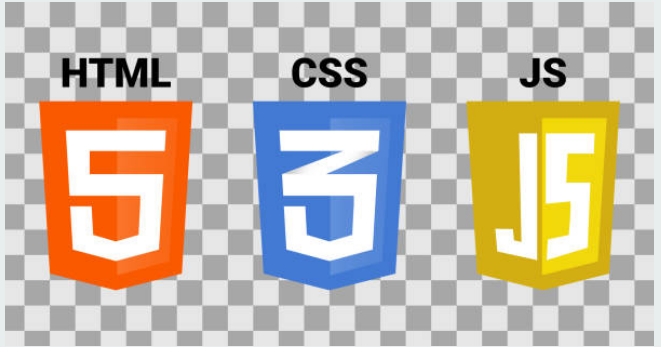

Como desenvolvedor full stack sei programar tanto nas áreas de front e back-end quanto em banco de dados... Tenho o domínio das linguagens de programação : Javascript, Html5 , Css3 , Banco de dados, Bootstrap , node , Angular e Rest Api. Também sei interpretar e trabalhar com códigos de trabalho feito por outros programadores especialistas em back ou front-end , também tenho facilidade de me relacionar bem com o time . Para saber mais sobre mim , clique no menu acima , aba : github e linkedin .
